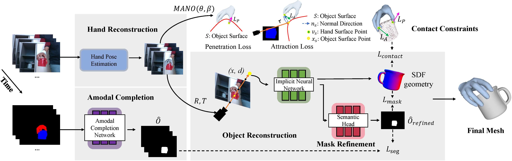

Abstract
Our work aims to reconstruct a 3D object that is held and rotated by a hand in front of a static RGB camera. Previous methods that use implicit neural representations to recover the geometry of a generic hand-held object from multi-view images achieved compelling results in the visible part of the object. However, these methods falter in accurately capturing the shape within the hand-object contact region due to occlusion. In this paper, we propose a novel method that deals with surface reconstruction under occlusion by incorporating priors of 2D occlusion elucidation and physical contact constraints. For the former, we introduce an object amodal completion network to infer the 2D complete mask of objects under occlusion. To ensure the accuracy and view consistency of the predicted 2D amodal masks, we devise a joint optimization method for both amodal mask refinement and 3D reconstruction. For the latter, we impose penetration and attraction constraints on the local geometry in contact regions. We evaluate our approach on HO3D and HOD datasets and demonstrate that it outperforms the state-of-the-art methods in terms of reconstruction surface quality, with an improvement of 52% on HO3D and 20% on HOD.
Problem Setup

Video
Overview
Overview of our framework, consisting of three parts. Hand reconstruction: we optimize the MANO parameters to reconstruct both the hand mesh and camera-relative motion. Amodal completion: by utilizing the amodal completion network, we can recover amodal masks from the input hand and object segmentation maps. Object reconstruction: we learn the 3D objects with the neural implicit field, which is supervised by input images, hand meshes, and amodal masks. To improve the consistency and quality of the predicted amodal masks, we refine them with a semantic head.